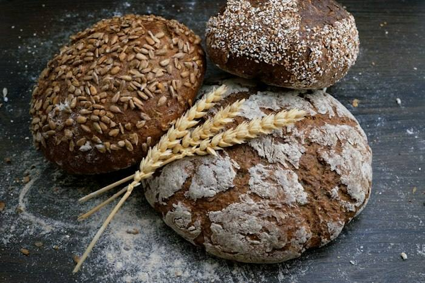
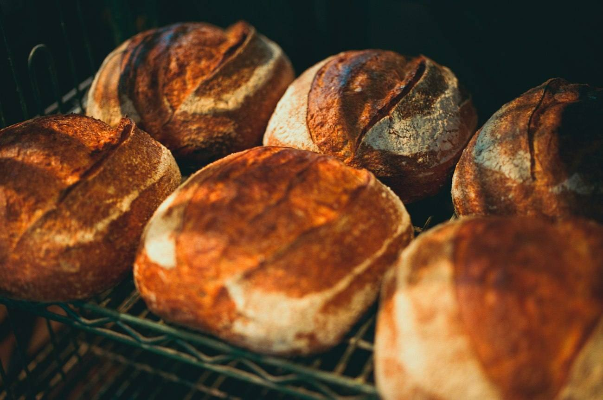
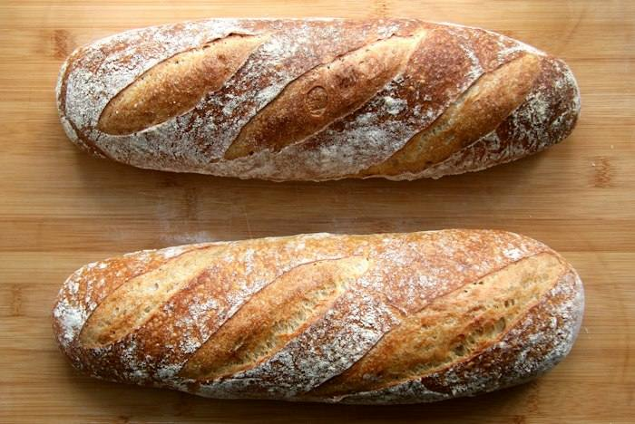
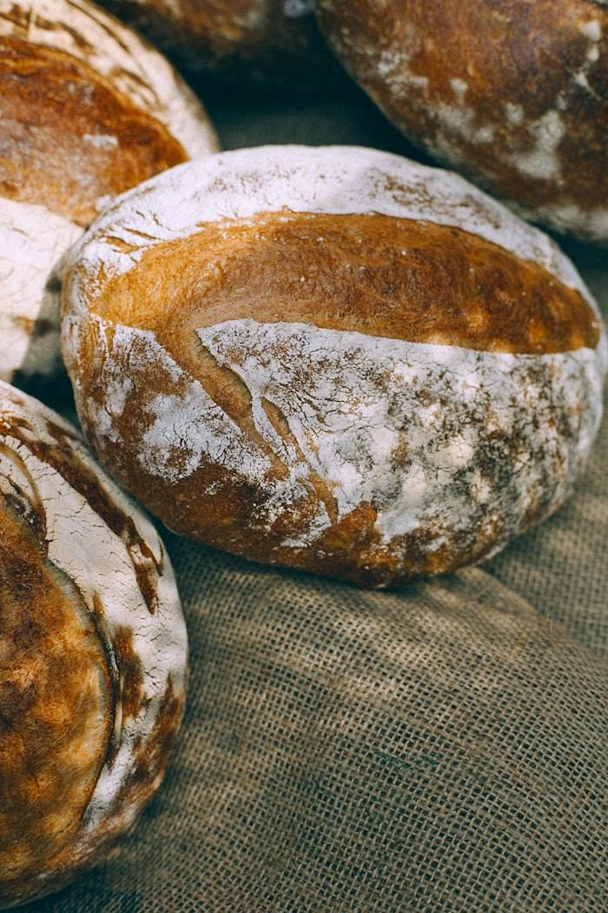
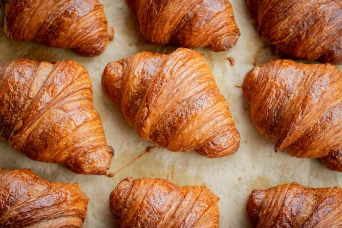
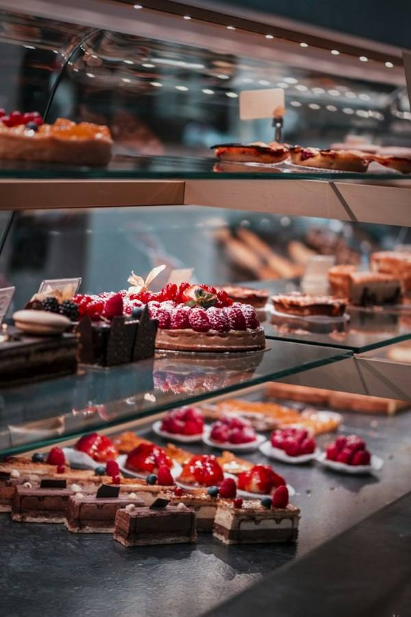
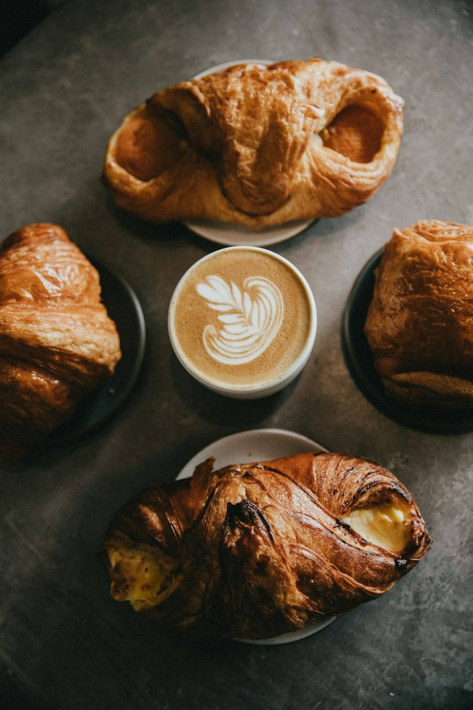

Pan de pueblo
- Hogaza de 1/2 kg1,80 €
- Pan de centeno Masa madre2,40 €
- Integral con semillas2,20 €
Panadería en San Juan de Aznalfarache
Masa madre, harina de la vega y tres hornadas al día. Y los dulces de siempre según la época del año.

Nuestro pan
Te lo guardamos si nos escribes antes de las 11. Los domingos, mejor encargarlo el sábado.



Dulces
La bollería la hacemos todos los días. Lo de temporada, mientras dura.

De nata, trufa o sin relleno. Encárgalo con una semana.
De vino dulce y de leche, con miel o con azúcar.
Rellenos de crema y de chocolate.
De la casa, en cajas de medio kilo.
Tartas por encargo
Elige tamaño y sabor. Escribimos el nombre o el mensaje que quieras.
| Tamaño | Precio |
|---|---|
| 6 raciones | 18 € |
| 10 raciones | 28 € |
| 15 raciones | 38 € |
| 25 raciones (dos pisos) | 65 € |


Rincón de desayunos
2,80 €
Café y media tostada de pan de pueblo con tomate y aceite, o con mantequilla y mermelada. De lunes a sábado hasta las 11:30.
Vuestras opiniones de Google
El pan de pueblo aguanta tres días como el primero. Y las teleras de la tarde salen calentitas.
Manolo F. · hace 1 semana
Encargué la tarta del cumple de mi hija por WhatsApp y la tenían lista a la hora. Riquísima.
Rocío V. · hace 3 semanas
Las torrijas de Semana Santa son las mejores del pueblo, sin discusión.
Isabel T. · hace 7 meses
Opiniones de ejemplo para esta muestra. En la web real se muestran las vuestras de Google.
Horario
Dónde estamos
Junto a la plaza del Ayuntamiento. Puedes aparcar en doble fila un minuto: salimos a dártelo.
Cómo llegar